How to build scenarios, step by step · Save and Commit from inside Infinite Match and Infinite Highlights · the difficulty argument, researched and simulated · an eye (ⓘ) on every admin page
156/156chances saved from a match that come back in the gallery exactly as they were
26admin and dev pages that now have the eye explaining every button
9% → 0%how much bigger Play was than the picture on a phone — the goalie that "still moved"
~1 in 100players still playing on the day they'd reach the Premier League at today's pace (model)
How to build scenarios
A scenario is one hand-drawn picture of a chance type: a one-on-one, a corner, a tight angle. The game plays the drawings the team has committed, nudging each one slightly every time so they never repeat exactly.
This browserYour drags, ✓ / ✕ marks and extra versions. Nobody else sees them.Drag
→
The team's listEveryone sees it in the gallery straight away. Not in real matches yet.Save
→
The gameReal matches use it for every player, about 2 minutes after the commit.Commit
Open the gallery, then 11-a-side
knowitball.co.uk/star-gallery-dev. Sign in with the admin account first, or nothing will save.
5-a-side is for looking only; nothing there reaches the game yet.
Tuning & Commit is where everything saved but not yet in the game waits.
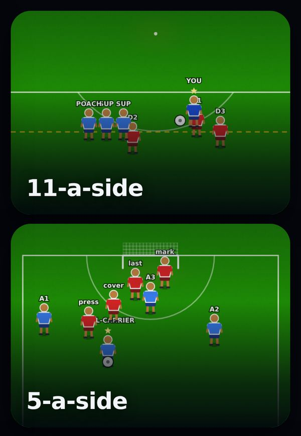
The bar at the top says how many are waiting to commit.
Pick a chance type
Each chip reads in the game / saved and shows the same numbers on every device.
one on one · 21/22: 22 saved, 21 of them committed.
long range · 0/0: nothing drawn yet. The game still uses its built-in shapes for it.
+ Add version gives you another blank card of this type to draw on.
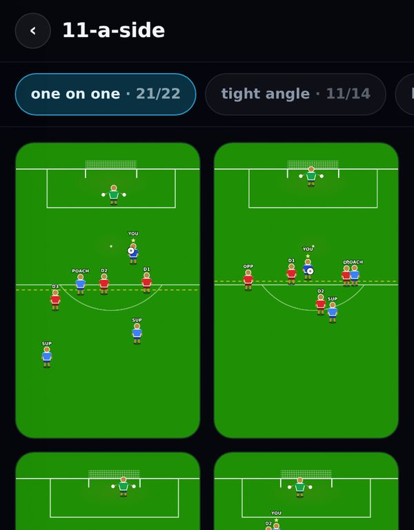
Tap any card to open it.
Open a card and read the two pills
The first pill says where this card is; the second says whether real matches use it.
Draft / Unsaved changes: this browser only.
Saved — in the game once committed: the team can see it; matches can't use it yet.
Committed — in the game: live.
Saved — the game still has the older copy: you changed it after it was committed. Commit again.
A red line under the picture names what breaks the chance's own rules, e.g. a defender between the ball and goal in a one-on-one.
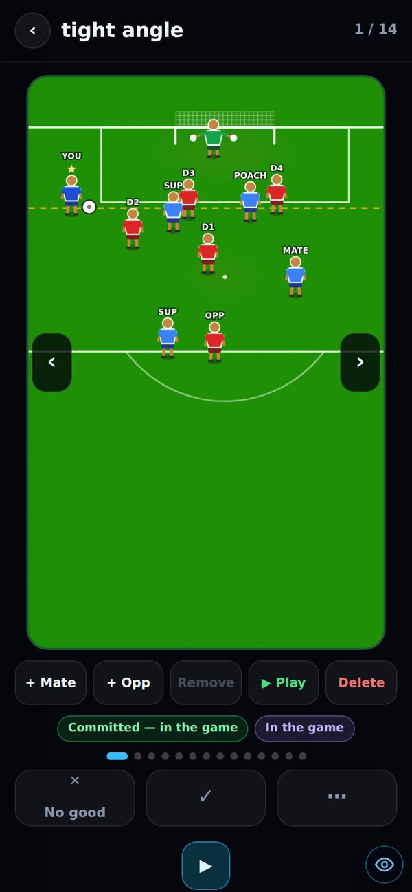
‹ › or a swipe on the grass moves between versions.
Fix it: drag anyone, or the ball
Tap a player to select him (blue ring), then drag. The ball drags on its own too.
+ Mate adds a team-mate who makes a real supporting run and can take a pass.
+ Opp adds an opponent.
Remove takes out the player you tapped.
A blue border and the amber pill mean it's unsaved and only in this browser.
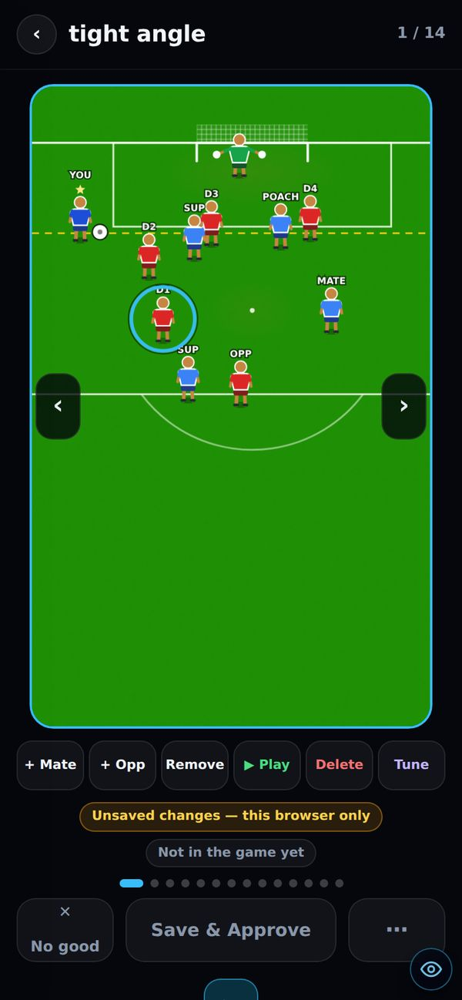
After a drag the Tune button appears. See step 8.
Check it plays right: ▶ Play
▶ Play turns the picture into the real chance, drags and all, without leaving the card. ◼ Stop brings the picture back.
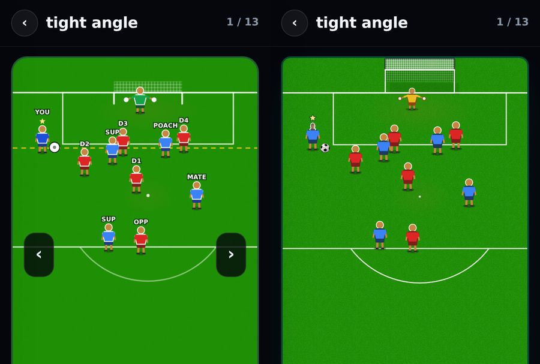
Left: the picture. Right: after Play, on a 340px phone. The keeper, ball and every player are in the same place. Before this round Play was drawn 9% bigger on a phone, which read as the keeper moving. The goal net is still drawn differently; see Known issues.
Keep it or bin it
Save & Approve (the ✓ button) saves it for the team and ticks it. ✕ No good marks a bad one on your device only; the card stays.
The ✓ only says "Save & Approve" when there's something to save: a drag, or a card nobody has saved yet.
The ⋯ menu has Save, Revert to built-in, Commit to repo, Export JSON and Discard unsaved edits.
Revert only removes the saved copy. If it was committed, it's still in the game. Delete removes it from both.
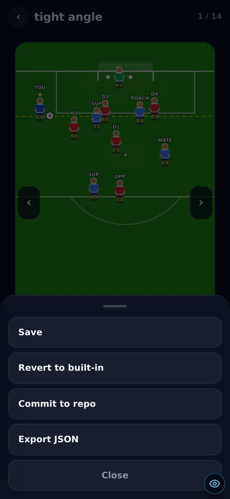
Commit to repo here commits just this one card.
Want more? ▶ Sim
The small ▶ under the verdict row rolls a fresh chance of this type, the way a real match would. Next → rolls another.
Save & Approve on a good one adds it as that type's next card, so 22/22 becomes 22/23.
"Back to version N" returns to where you were.
This is the fastest way to reach 30–50 per type: sim, fix, approve, next.
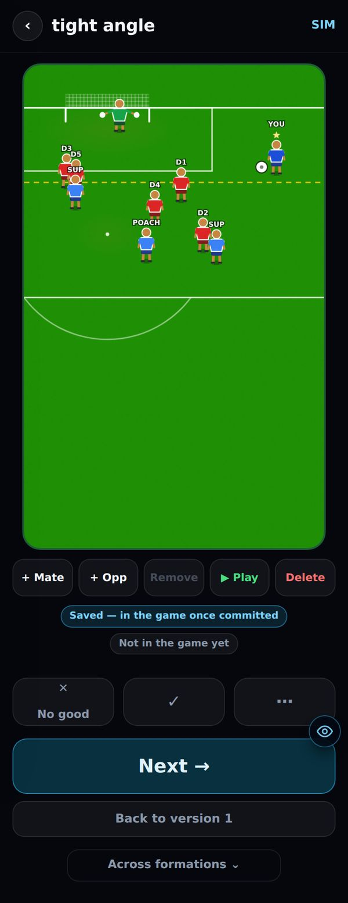
"SIM" in the corner means this card isn't saved yet.
Tune: only when you're teaching the generator
After a drag on a generated picture, Tune records what was wrong without saving the picture. Once 3 corrections of the same type agree, a rule is proposed.
Nothing is changed automatically. Ask Claude for "the tuner proposals" and it prints each rule and the exact number it would change.
Now: 3 corrections recorded and 0 proposals. Two patterns are at 1 of 3: one on one: a defender nearer goal than the ball and tight angle: how far the keeper comes off his line.
Put it in the game: Tuning & Commit
Look through all N first, open or leave out any card, then Commit all N to the repo. It makes one commit and one deploy, and takes about 2 minutes to go live.
Press it once. The count doesn't update until the deploy finishes.
Every commit also saves the same copy to the team's list, so the two can't drift apart.
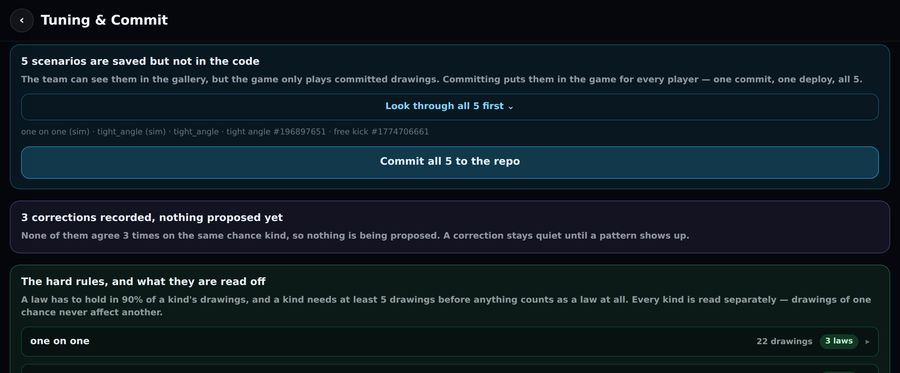
Right now 5 are saved but not in the code: 2 sims, 2 tight angles and 1 free kick.
When the game actually starts using them
A type needs 5 committed drawings before real matches use any of them. Below 5 it uses the built-in generator.
Each chance a match serves is one drawing, with every player nudged by up to 2m.
That's checked against the type's laws: anything true in 9 out of 10 of its drawings. If the nudge breaks a law, it's redrawn with a smaller one. The last try has no nudge at all.
A drawing that breaks a law itself is never used as a base. It shows up as an outlier to fix or delete.
Drawings of one type never affect another.
one on one
21 · in use
tight angle
11 · in use
free kick
0 (1 saved)
the other 10 types0 · built-in
Bars are out of 50, the top of the 30–50 target. The 5-drawing minimum is the point where a type's laws start to count.
Rules of thumb
Aim for 30–50 per type. Laws read off 5 drawings are much weaker than laws read off 50. Harry sets the rules after.
Saved isn't in the game. Only a commit reaches real matches.
Revert vs Delete. Revert takes the saved copy out of the team's list and leaves a committed copy in the game. Delete removes both, and asks first.
You need the admin sign-in to save or commit. Signed out you get "Forbidden — needs an admin sign-in", and nothing is lost from your screen.
On a laptop the picture sits in the middle: ✕ No good on the left; ✓, ⋯ and ▶ Sim on the right; the edit row underneath.
Stuck on a screen? Tap the eye (ⓘ) bottom-right. Every admin page now explains each button, where it saves and whether it commits.
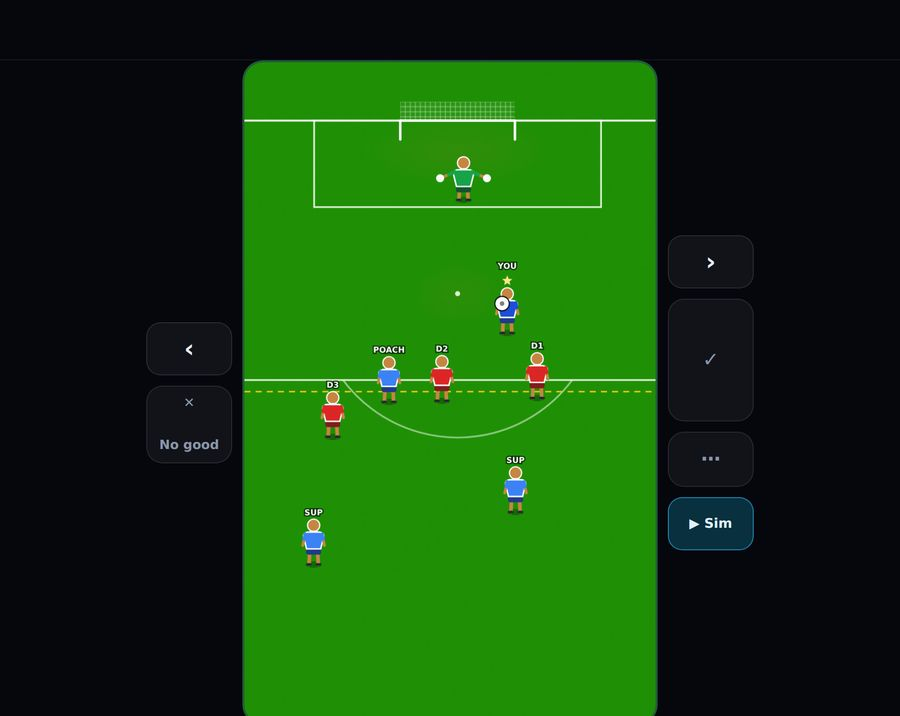
Laptop layout.
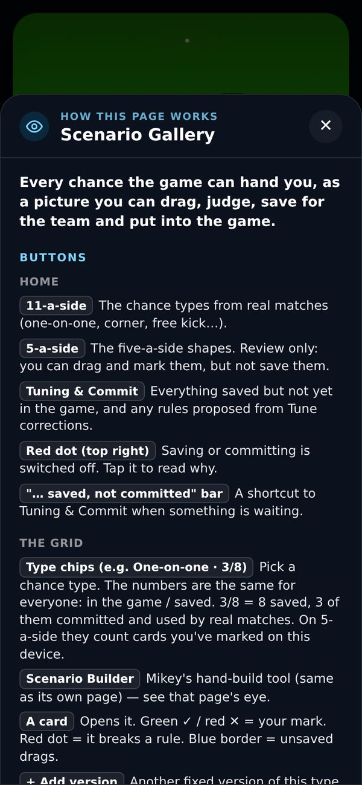
The eye, open.
Working, tested by Harry today
Play looks the same as the picture (tight angle, phone)
The ball drags on its own
No false "attacker offside" after removing the poacher
+ Mate makes a runner who moves in Play
Type counts match across browsers
▶ Sim → ✓ saves it into the type
Laptop layout: picture centred, buttons at the sides
Commit shows "Committed"
An Infinite Highlights save lands in the gallery
Tune corrections are shared between browsers
Infinite Match Save / Commit: rebuilt this round, test again
Side note: save straight from a match
You can now add to a chance type's scenarios without opening the gallery. If a chance comes up in the Play Area that's worth keeping, or needs fixing, save it where it is.
Infinite Match: Edit, Save and Commit stay pinned to the top
The bar names the chance you're on and the minute. Save keeps it exactly as it stands, with no editing needed. Commit puts it in the game. ✎ Edit opens it to drag first, and the editor has its own Save and Commit.
Infinite Highlights: Save and Commit on every highlight
Save used to appear only after a drag, and there was no Commit on that screen. Both are always there now. After a drag, Save reads "Save this fix".
Where it lands
In the gallery, as a new card of that chance type. It counts in the chip numbers and shows up in Tuning & Commit like anything else. Commit sends it into real matches.
saved chances rebuilt exactly (13 types × 12)
156/156
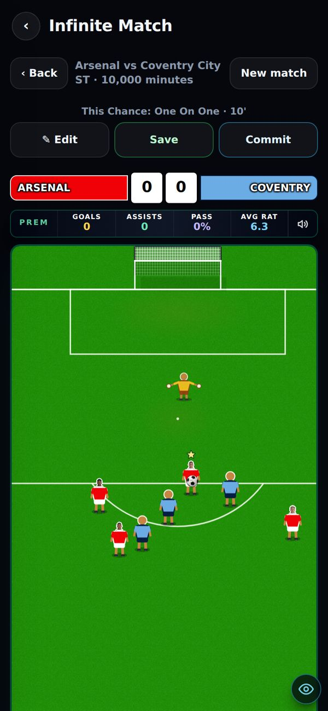
Infinite Match: the bar stays at the top while you scroll.
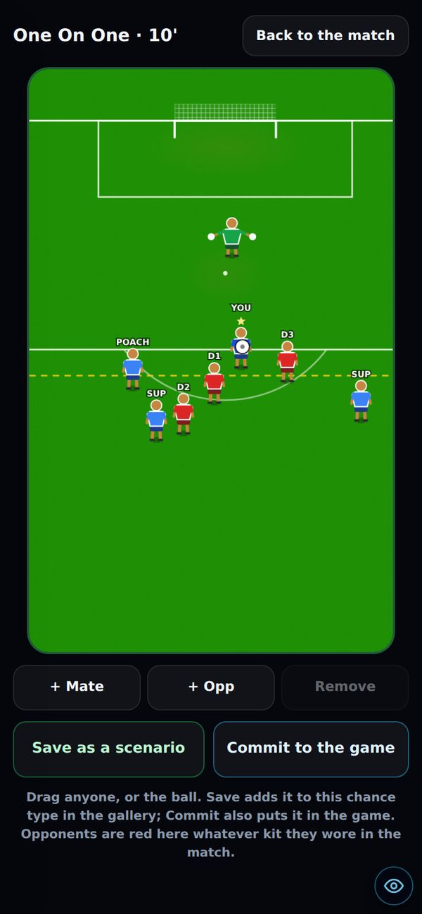
✎ Edit: the same chance, ready to drag. Opponents are red here whatever kit they wore.
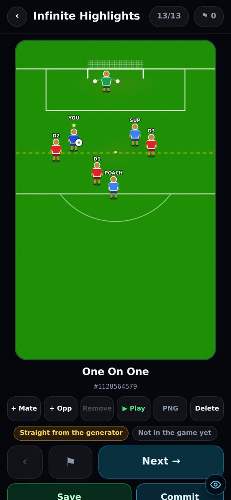
Infinite Highlights: Save and Commit under every highlight.
Not yet seen signed in
Both buttons reach the server. In my test browser they were refused as expected, because it isn't signed in as admin. The first real save is yours to try.
Difficulty, scaling & paying: deep dive
Short version: all three of you want modes. The real disagreement is which mode is the default, and which players pay. The research settles some of it. For the rest, two numbers nobody has measured decide the answer, and the simulations below show which.
The argument, in one screen
Harry
Main mode is a slow road to the top. The easy mode should be clearly casual.
people love a challenging game with real progressioneven if the easy side was like 30% bigger wed still probably make more from the grind peoplethe progression has to be so elite on the main version that we can just toggle these variables and make an easy version
Leo
Let players choose before they start. A quick route keeps people the grind would lose.
ONE HUNDRED percent let the user select before they start like a difficulty/modewe're missing out on probably like half the audiencei want the 10% to have an option
Mikey
Have both, and never let the game go flat.
Could have 2 difficulties one where its more of a challenge to get near the prem and another whether you can climb divisions easierThe game cannot get boring … A lull when your playing and then you don't feel like coming backFifa points make them billions
Where you already agree
Everyone backed modes ("I back having multiple modes"; "I already agreed with having difficulty like 5 times"). Everyone accepted Harry's condition that the easy mode is the same game with different settings: cheaper shop, weaker opponents, easier transfers. And Mikey's worry, lulls, turns out to be the best-supported point in the research.
What the research says
A few long-stayers pay for everything
In games that live off big spenders, the top 5% of spenders make 70% of revenue, rising to 81% by month 10 (Moloco, 55 games, 20M+ payers). Only 2–5% of players ever pay.
revenue from top 5% of spenders, month 1
70%
same, by month 10
81%
top spenders who bought nothing in month 1
87%
Most players leave on day one
The typical game keeps 16% of players to day 2 and 3.7% to day 7. A game in the top quarter keeps 26–28% and 7–8% (GameAnalytics, 11,600 games).
still playing day 1 (typical / top 25%)
16% 27%
still playing day 7 (typical / top 25%)
3.7% 7.5%
Uneven difficulty drives quitting more than hard difficulty
In a study of 263,000 players, swings in difficulty mattered more than the average level. Winning streaks were the strongest protection against quitting. Losing streaks did not make beginners quit; they only hurt advanced players.
The most important finding: easier for players about to quit meant more money overall
In a controlled trial with 330,000 players (Ascarza, Netzer & Runge, 2025), players about to quit were given easier levels. They spent less in that round because they didn't need help. But they stayed longer, and spent about 7–8 cents more per player over 30 days.
Paying to skip only works if the skip is expensive
Timer-and-skip games made over $3B in 2021. The same study found that skips priced too cheaply make the game less satisfying. The healthy version is expensive skips bought by a few big spenders.
Hard games sell when there's a way around the wall
Elden Ring: 70.8% beat the first big boss, 30M sold. Sekiro: 47.5% beat its early skill-check boss, 10M sold. Both kept the difficulty, and Elden Ring gave players a way round it: summon help, or go elsewhere and level up.
Football games specifically
New Star Soccer hit #1 top-grossing in the UK, earning about £7k a day at peak, with in-app purchases about half of that. Its creator: "you're only two minutes away from another result, another wage packet." Football Manager (fan poll, weak source): 36% quit a save within 5 seasons, and 23% play more than 21.
EA and Ultimate Team
Ultimate Team made $1.62B in EA's 2021 financial year, 29% of EA's revenue. EA's finance chief said about half of Ultimate Team players spend.
That money is pack-opening in a player-vs-player mode, not paying to skip a solo career. It shows sports players spend. It doesn't show who, and EA has never published a split between hardcore and casual players.
Each claim, checked
Claim
Who
Evidence
The money comes from players who stay for months
Harry
backed 87% of top spenders hadn't paid in month 1.
Harder means they spend more
Harry
against it The one controlled test found easier-for-quitters made more money.
Most players want to start at the bottom
Harry
no data No study compares starting weak with starting strong.
Day one is where players are lost
Leo
backed About 84% of players are gone by day 2.
Without a quick mode we lose half the audience
Leo
unproven Nobody has measured it. Simulation 2 shows the whole answer turns on it.
A lull kills the game
Mikey
backed Difficulty swings and lulls drive quitting more than a hard start does.
Casual players are the ones who pay to skip
Mikey
no data The FIFA points money is pack-opening, not skipping.
Simulation 1: who ever sees the Premier League?
Harry flagged it himself: "prem after like 7 szns … if thats half the game cycle all of the ownership stuff … probably is never getting hit". Move the dials.
10 in 1,000
players are still playing on day 40, the day they'd reach the Premier League. In a top-25% game: 21 in 1,000.
The curve runs through the typical game's real day-1 and day-7 figures (16%, 3.7%). "Still playing that day" is a ceiling: reaching the Prem also needs them to have played that much in total. Halving the road to the top, from 20 hours to 10, takes it from 10 to 17 in 1,000, without changing where the game starts.
Simulation 2: does adding a casual mode make more money?
This is a model of one month of new players over their first six months. Tap a person to load their view of the argument, then move the dials.
+18%
money with both modes, against the main mode alone.
main mode only
100
both modes
118
Only the comparison means anything; the money itself is made up. Spending per active player rises with time in the game, about 7× by month 6, because big spenders arrive late. Main-mode players follow the typical retention curve. Casual players get the day-1 boost and the drop-off you pick.
What the simulation says
Harry's view: 95 (casual costs a little). Leo's: 183.Mikey's: 163.Worst case: 71. The answer flips on two numbers: how many new players casual brings in, and how long they stay. Even on Harry's assumptions, casual pays for itself if it brings in about 1 new player for every 5 you already have. Nobody has measured either number, and PostHog can.
In-game purchases: what to sell, and what not to
Sell: rewarded ads
Watch an ad for a retry or one more chance. It's money from the 95%+ who never pay, and it smooths out difficulty spikes, which the research says is what keeps players.
Sell: cosmetics and a cheap starter pack
Kits, boots skins, celebrations. A starter pack at £0.99–2.99 is the usual first purchase. Weak sources say one purchase makes another 5–10× likelier.
Sell: time-savers, priced high
Cheap skips make the climb feel worthless. Priced high, a few big spenders buy them and everyone else's grind still means something.
Hold back: interstitial ads until players are well in
Score! Hero waits until level 25, so buyers can convert first.
Don't: sell stat boosts for real money
That's what gets a game called pay-to-win. KIB Stat Cans (+3/+5/+8) are fine as they are, bought with in-game stars. Selling them for real money is the line. Never in a hard mode.
Recommendation
Road to Glory is the default, pre-selected decision for Harry
"Superstar Start (casual)" sits next to it on the same screen, clearly labelled, not buried in settings. It gets its own saves and achievements.
Casual is the same game with different settings
Where you start, opponent strength, shop prices and transfer ease. The main mode's flow doesn't change (Harry's condition).
A hard mode later, earned
Unlocked by a Ballon d'Or, as Harry suggested. No paid boosts in it.
Plan pace in hours, not seasons
Something big every session: a promotion race or a cup tie against a Premier League club in season 1, plus an unlock every season, like Mikey's free trial of the curve boots. Simulation 1 is the reason.
Smooth out spikes in the main mode without making it easier overall
A retry after a rewarded ad, not rigged results.
Settle it with data
Add PostHog events for: which mode was picked, session length, day 1 and day 7 back, time to each promotion, and the day of first purchase. Decide once there are about 1,000 players in each mode.
What the research couldn't answer
There's no published split of hardcore vs casual spending in football games, and no Celeste Assist Mode usage figures.
Nobody has tested starting weak against starting strong.
Almost all of this comes from mobile free-to-play games in general, not a browser football career game. Treat it as direction, not proof.
There was one Edit button above the scoreboard, and it scrolled away. Edit, Save and Commit are now pinned to the top for the whole match.
Infinite Highlights had no Commit, and no Save until you dragged
Both are now under every highlight.
The keeper "still moved" when you pressed Play on a phone
At 340px wide, the picture drew 340px in a 312px space and got cut off, while Play fitted the space: a 9% size jump. Both are 312px now. Seen side by side in a browser, everything lands within 5px.
Play vs picture size, 340px phone
0% 9%
A gallery card could go blank on a resize
This came from the phone fix above, which is already on main. Before the page had measured the screen, the picture got a negative size and the whole card crashed. Seen in a browser: 7 errors on a resize before, 0 after.
Button rows cut off on a phone
Infinite Highlights ran to 433px on a 390px screen, which cut Delete off. The gallery clipped "+ Mate" and "Remove" once Tune appeared. All buttons now fit at 390px, measured.
Added
An eye (ⓘ) on all 26 admin and dev pages
It looks the same everywhere and explains what the page is, every button by its on-screen name, where saving goes, whether anything commits, and where it shows up in the game. A standing rule now means anyone who changes a button has to update its explanation in the same change.
Left out on purpose: the game itself (/star-dev) and the public squad builder.
A test for saving from a match
It saves a live chance, sends it through the same route as a real save, and rebuilds it the way the gallery does: 156/156 come back exact. Checked by breaking the save on purpose: the test caught it, 0/156.
Changed
Tune corrections are shared now
Mikey ran the migration, and it's confirmed live: 3 corrections recorded, 0 proposals yet.
Leo's 11 scenarios are in the code
Merged to main by Mikey.
Energy is Mikey's
It's covered in his own patch notes, not here.
Known issues
draft-dev pages aren't sandboxes
/draft-dev and /draft-dev2 share the real Draft's saved game on that device. They also post to real Draft history, XP and records, and create real multiplayer rooms. Found while writing their info panel; not fixed.
The goal is drawn differently in Play and in the picture
Seen in a browser: in Play the net rises above the goal line and the six-yard box isn't drawn. Players, keeper and ball are in the same places; only the goal looks different.
The Scenario Builder can't reach the game
Its text says "saved locally", but it actually saves to the team's list. It has no commit, so nothing built there goes into matches.
The Tuning editor saves in that browser only
Nothing on /star-tuning-dev commits, even though earlier notes describe it as part of the commit system.
Small things the info-panel check turned up
Four items
Squad Builder: "Best XI" fills 7 bench spots, but the bench holds 9.
Infinite Highlights is missing from the admin side menu.
/admin/xp, custom clubs and the football pages have no admin check on the page itself. Their data is still admin-only.
custom_clubs.sql isn't in the migrations list, so nobody knows if it has been run.
Team-mates right next to you steal your shot as a pass needs Mikey
Carried over from v0.7. The fix changes the match engine file Mikey asked nobody to touch.
Keepers on rebounds and near-post positioning
Carried over. Tight angle near-post 0.50 is waiting on your go.
"Not the same game in the play area": which part? blocked on Harry
Carried over. The kits, the faces, the ball, or how a shot feels?
Not seen with an admin sign-in
Save and Commit from Infinite Match and Infinite Highlights. Added team-mates taking a pass in Play.
Next
Your call on the mode structure
Default mode, what casual changes, and which PostHog events to add first.
Leo and Mikey: 30–50 scenarios per type
Sim → fix → Save & Approve → Next is the fastest route. Commit in batches from Tuning & Commit.
Camera framing in the builder
Saved cards can already carry their own framing (from Infinite Match), so a zoom and pan control is a small step. Not built.
Previous versions
v0.7 — 23 Sep 2026 · Play matches the picture, the difficulty research
Fixed: pressing Play no longer made the picture jump (13% → 0% on a laptop) · the ball drags on its own again · false "attacker offside" (3/65 → 0/65) · ✓ on a sim now saves it · every commit also saves, so the list and the code can't drift · added team-mates make real runs
Added: Edit this chance in Infinite Match · Infinite Highlights saves land in the gallery
Changed: picture in the middle, buttons at the sides on a laptop · type counts shared across browsers · "+ Opponent" became "+ Opp"
Still open from it: team-mates stealing the shot · keeper near-post · camera framing · "not the same game" · team-mates in Play not seen live
v0.4 — Play Area, Infinite Match, commit review
Play in the gallery used your saved drawing, the Play Area and Infinite Match arrived, and scenarios could be reviewed before committing.
v0.3.5 — from the 40-minute call
Delete on any scenario, the X relabelled No good, and every decision and idea from the call written down.